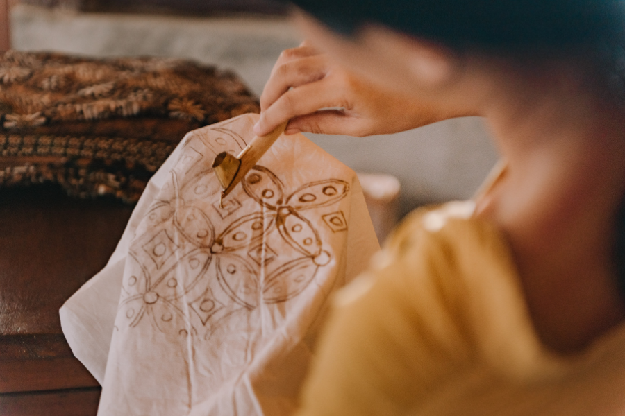

Batik & Handicraft Globalization Strategy
Established a clear international branding strategy and market-entry roadmap, enhancing global appeal and export readiness without compromising cultural heritage.
Advised a Malaysian batik and handicraft business on international expansion, focusing on branding, market entry, and distribution while preserving cultural authenticity. The strategy positioned traditional artisanal products for modern global markets and prepared the business for sustainable export growth.
View Case Study →